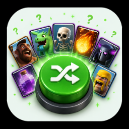

🎉 EĞLENCE
Kart sıralama oyunu, rastgele meta deste çarkı ve yakında gelecek yeni eğlenceler burada.
ÇARKI ÇEVİR, META DESTESİNİ KEŞFET
Çark, güncel meta destelerinden birini rastgele seçer. Sonuç; kartlar, kopyalama linki ve oynanış ipucuyla birlikte gösterilir.
Veri yükleniyor…
Cenabet DesteOyundaki kartlardan tamamen rastgele 8 kartlık kafadan bir deste! Mantık arama.
Aklından bir Clash Royale kartı tut. Sorularımı yanıtla, kartını bulayım.
Buradaki oyunların bir kısmı puanlı, bir kısmı serbest. Puanlı olanlar Tokmakçılar tablosuna yazar ve haftalık ödüller o tablodan dağıtılır; serbest olanları istediğiniz kadar oynayabilirsiniz, hiçbir sayacı etkilemezler.
Puanlı oyunların her birinin günlük bir sınırı var — kimi günde bir, kimi günde on. Sınır olmasaydı tablo, en iyi oynayanın değil en çok vakti olanın tablosu olurdu. Günlük hak, günde yarım saat ayıran biriyle bütün günü oynayan biri arasındaki farkı kapatıyor. Haklar her gün aynı saatte sıfırlanıyor.
Soruların doğru cevabı hiçbir zaman tarayıcıya gönderilmiyor. Ekrandaki kod ne kadar incelenirse incelensin cevap orada yok; gönderdiğiniz yanıt sunucuda karşılaştırılıyor ve puanı da sunucu belirliyor. Aynı şekilde günlük hak da sunucuda sayılıyor — sayfayı yenilemek, geliştirici konsolunu açmak ya da doğrudan API'ye istek atmak fazladan hak kazandırmıyor.
Bir oyuna başladıktan sonra bağlantınız koparsa ya da sekmeyi kapatırsanız, geri döndüğünüzde kaldığınız yerden devam edersiniz. Hak oyunun başında harcandığı için bu önemli: yoksa beş ipucu açmış biri hem hakkını hem ilerlemesini kaybederdi.
Her hafta tablo sıfırdan başlar ve önceki haftanın kazananları arşive geçer. Haftalar arasında kısa bir ara olabilir; o pencerede oyunlar açık kalır ama puan hiçbir haftaya yazılmaz — yeni hafta herkes için aynı yerden başlasın diye. Böyle bir durumda ekranda uyarı görürsünüz, puanınızın sessizce kaybolması diye bir şey yoktur.